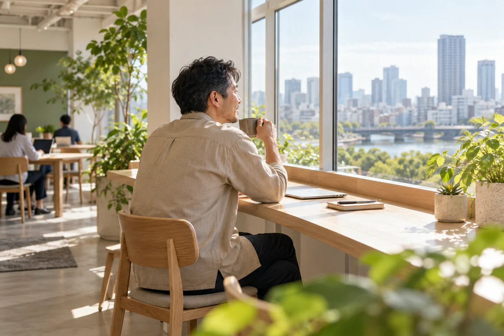

ACCESS & FAQ
アクセス・FAQ
訪れる前に、知っておきたいこと。
アクセス情報と、よくある質問をご案内します。

ACCESS
あなたの次の居場所へ。
- 施設名
- NEST WORK（ネストワーク）
- 所在地
- 〒100-0005
東京都千代田区丸の内1丁目9-1 - 最寄り駅
- 東京駅
- 営業時間
- 9:00〜21:00
- 定休日
- 年末年始（12月29日〜1月3日）
FREQUENTLY ASKED QUESTIONS
よくある質問
初めてでも利用できますか？
初めての方にも、受付で施設の使い方と利用ルールをご案内します。まずは短時間のドロップインから、ご自身に合う使い方をお試しいただけます。
仕事以外に、勉強でも使えますか？
仕事だけでなく、資格の勉強や読書などにもご利用いただけます。ワークスペースとラウンジについては、施設・設備ページをご覧ください。
予約は必要ですか？
予約の要否や受付方法は現在未確定です。利用条件を確定した後、このページでご案内します。
Wi-Fiと電源は使えますか？
すべてのプランで、Wi-Fiと電源を利用できます。パソコンや充電器など、作業に必要なものをご用意ください。
ドロップインの料金はいくらですか？
料金は1時間550円（税込）、1日上限2,200円（税込）です。月の利用日数に制限はありません。
月額ライトで月8日を超えて使う場合は？
9日目以降はドロップイン料金を加算します。利用日数と時間に応じた目安は、料金シミュレーターで確認できます。
会議室はプラン料金に含まれますか？
会議室は別料金を想定しています。料金・予約方法は未確定です。料金シミュレーターの計算にも含まれていません。
営業時間や所在地を教えてください。
所在地は〒100-0005 東京都千代田区丸の内1丁目9-1です。営業時間は9:00〜21:00、定休日は年末年始（12月29日〜1月3日）です。